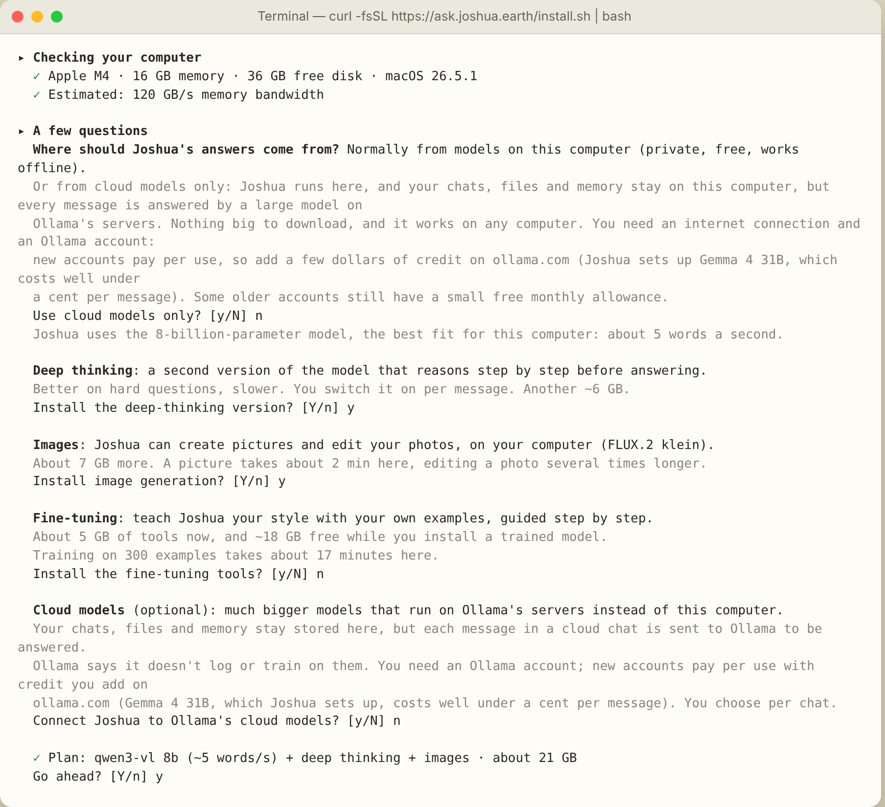
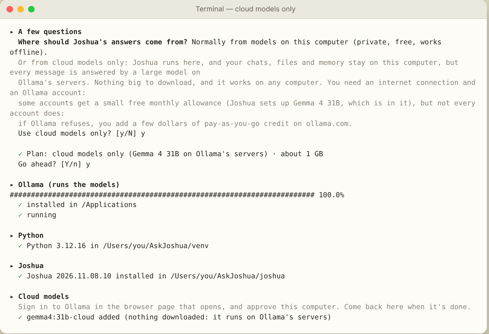
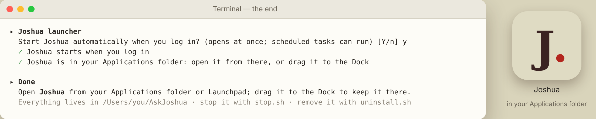

The installer isn't signed with an Apple certificate yet, so macOS stops it the first time. Its code is public on GitHub. To open it:
Or, on a Mac or a Linux PC, paste this in Terminal:
curl -fsSL https://ask.joshua.earth/install.sh | bash
Paste it in a terminal. A Mac with Apple Silicon (M1 or later) or a Linux PC, 8 GB of memory, 10–40 GB of free disk. On Linux an NVIDIA graphics card makes it much faster. Free and open.
The installer looks at your computer first: chip, graphics card, memory, free disk, and estimates how fast each model would run on it. It asks whether you want deep thinking, images and fine-tuning, or cloud models only, shows the plan and the space it needs, and waits for your yes.
Then it installs Ollama, the engine that runs the models, a private copy of Python, Joshua and the models you chose, and offers to start Joshua when you log in, so it opens at once and scheduled tasks can run. On a Mac, Joshua is an app of its own in the Applications folder, with its own window and Dock icon; on Linux it opens in its own window from the applications menu. Everything else stays in one folder, ~/AskJoshua, with an uninstall.sh that removes it.
Before you start. Installing takes about 20 minutes, most of it downloading, depending on your connection and the options you choose. On some Macs, macOS also offers to install Apple's “Command Line Developer Tools” along the way: let it finish. Its first time estimate (sometimes many hours) is wrong; it usually takes 10–20 minutes. Cloud models need an Ollama account: when the installer opens the sign-in page, Continue with Google with your Gmail address is enough. New Ollama accounts pay per use: add a few dollars of credit on ollama.com before using cloud models. Local models are always free. Local models need no account.
Prefer to read before you run? Open install.sh: it is plain, commented shell. All of Joshua's code is on GitHub, under the AGPL licence.
| Memory | Model | Options |
|---|---|---|
| 8 GB | qwen3-vl 4B · about 3 GB | Deep thinking. Images are not offered: they need 16 GB. On a slow chip the 4B is suggested even with 16 GB. |
| 16–24 GB | qwen3-vl 8B · about 6 GB | Deep thinking, images (FLUX.2 klein), fine-tuning. |
| 32 GB+ | qwen3-vl 30B · about 20 GB | Everything, with a larger and smarter model if you want it. |
| Any computer | Cloud models only · about 1 GB | For computers too small or too old for local models (Intel Macs, under 8 GB of memory, little free disk), or if you prefer. Answers come from Ollama's servers; chats, files and memory stay on your computer. Needs an internet connection and an Ollama account with a few dollars of pay-as-you-go credit. |
| Mac with macOS 26 | 🍎 Apple Intelligence · already on the Mac | Added by itself, with any choice above, when Apple Intelligence is on (any Mac with an M1 or later). Free, private and fast, but small: no tools, short chats, more mistakes. |
| Linux | chosen by the graphics card: 4B under 7 GB, 8B from 7 GB, 30B from 22 GB | Images from 12 GB, fine-tuning from 8 GB, on NVIDIA cards. Without a card, the 4B runs on the processor, slowly. |


